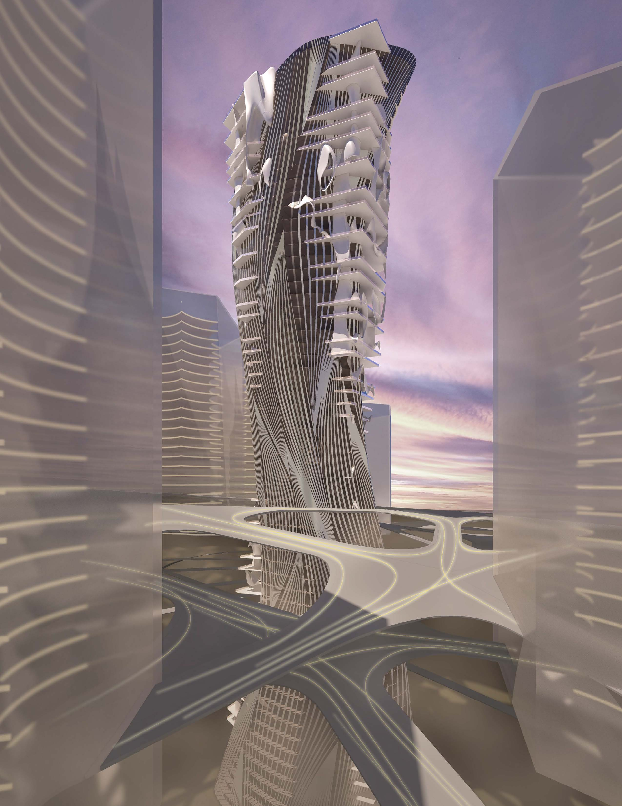
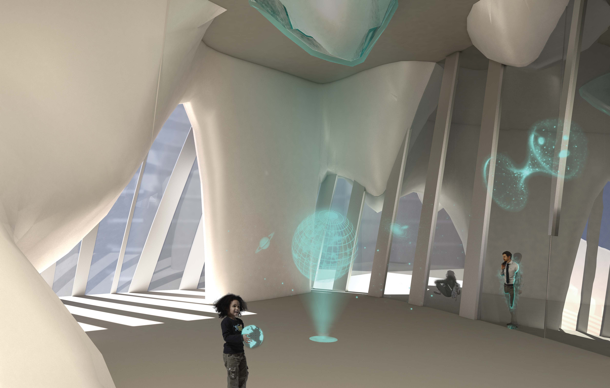

Medini Iskandar, Malaysia
Academic
Kory Bieg
In 100 years from now, daily life pf people highly relys on AI systems or robots. New jobs like system silvilience appears when many labor-demanded jobs are taken by robots. We could expecte longer and healthier life, and with the technology development, driverless car and drones could take you anywhere faster than you imagine. We see the Medini City in 100 years as a future city of multi-core urban grid with elevated network.
A of the urban cores is not only supporting transportation on earth, but also a station to the space. The Mesuem of Future for Medini is a mixed-use tower, with rocket lauch platform on top.
The exhibitions include physical and experiencable aspects of past life of medini. The structure of the tower is one of few strucutural supporting of the whole city network.
 